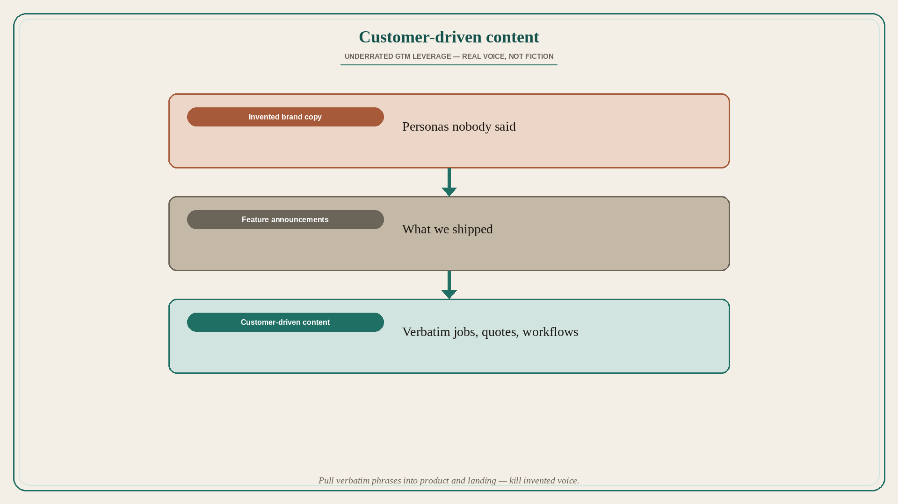

Customer-driven content is underrated GTM leverage
Source: Alejandro Vivanco (@alvivanco)
original post
What it claims
Reacting to a Lenny / OpenAI / Stripe / interview thread (@lennysan, @OpenAI, @stripe, @krithix), Vivanco calls out that customer-driven content is so underrated — “great interview with tons of actionable advice,” with notes shared as images. The load-bearing claim in the API text: content rooted in real customers (not brand fiction) is underused GTM leverage. The interview notes themselves are in the attached photos. (Source post is primarily a carousel/thread image — the detailed process bullets live in the image and are not reconstructed here.)
Why it matters for a PO
POs often own the “what we ship” and leave content to marketing that invents personas. Customer-driven content — quotes, jobs-to-be-done language, real workflows — is product work that compounds acquisition and onboarding. Underrated means it is usually missing from the roadmap.
3 takeaways
- Customer-driven content is underrated relative to brand or feature marketing.
- Actionable GTM advice often points back to real customer voice, not invented copy.
- Treat customer language as a product asset, not a marketing afterthought.
Practice this week
Pull three verbatim customer phrases from recent calls or tickets. Put one on the landing or in-product empty state this sprint. Kill one sentence of invented marketing voice that no customer has said.